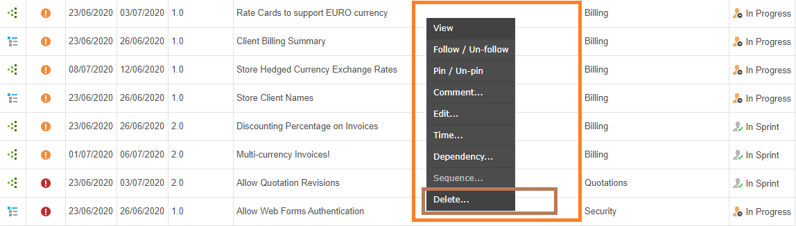
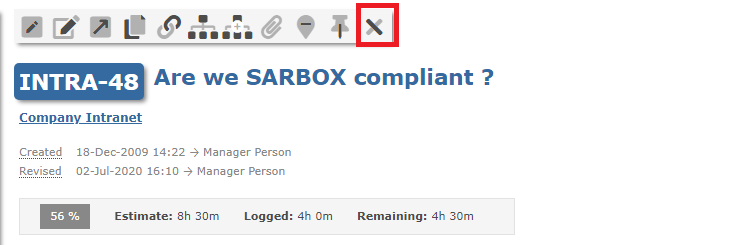

There are various ways to delete an item.
When viewing items on the grid you can right-click on an item and select Delete from the context menu.

You can click on the delete icon to delete an item.
